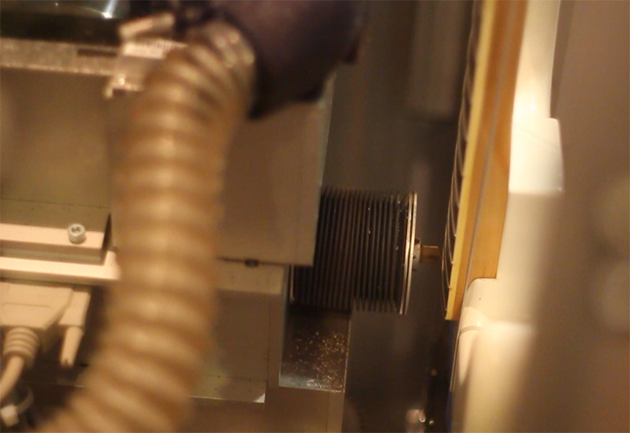

Selon l'utilisation de votre guitare, les frettes s'usent plus ou moins rapidement, et malgré les nouvelles générations de frettes disponibles dans les ateliers de luthier, une rectification de celles-ci est moins systématique mais toujours nécessaire.
Développée en Allemagne il y a 10 ans, la machine PLEK permet d'assister le luthier dans un travail de précision : la planimétrie des frettes (fret dressing). Elle reforme les frettes avec une grande précision, de l'ordre du micron. Ce processus est réalisé par des machines contrôlées numériquement par le luthier.
Gage de qualité, la PLEK est particulièrement intéressante pour le devenir du luthier, s'adaptant au 21e siècle et aux nouvelles technologies de l'artisanat. L'atelier d'Alexandre est depuis quelques années le seul atelier en France à posséder une machine PLEK !
Pour plus d'informations sur la machine PLEK, nous vous invitons à vous rendre sur le site web du constructeur.
